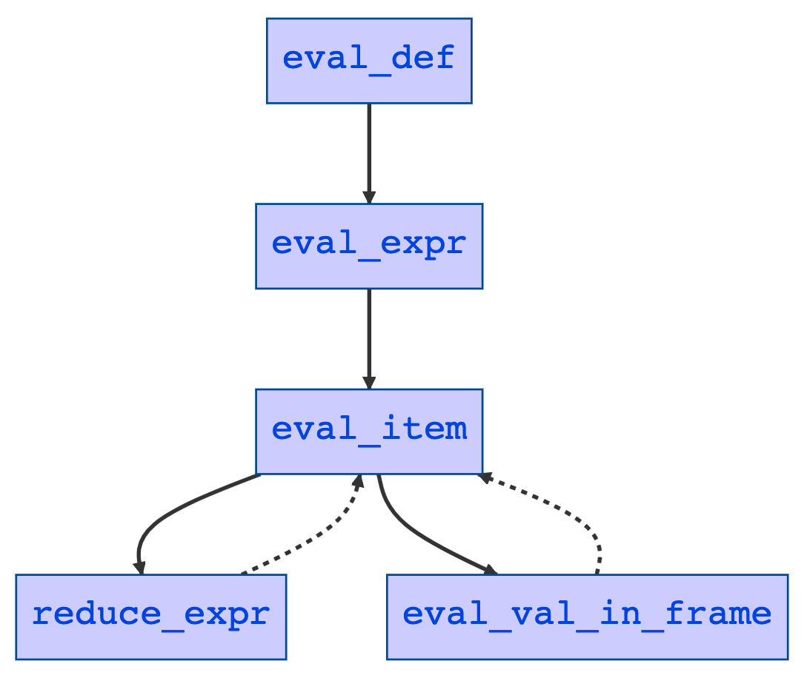

# CS 131:<br/>Programming Languages ## _Lecture 10_:<br/>The _$\mu$Scheme+_ Language:<br/>The Code, part 1 --- ## Today * The _$\mu$Scheme+_ language: a walkthrough of the code --- ## The story so far * Recall: _$\mu$Scheme+_ is _$\mu$Scheme_ extended with "control operators" * `break` and `continue` * `throw` and `try-catch` * `return` * Adding control operators requires us to change our evaluator to use a stack of "contexts" * Each "context" represents a partially-evaluated expression --- ## Previously... * In the code for the _$\mu$Scheme_ interpreter, the main evaluator function looks like this: <pre><code>let rec eval_expr env expr = match expr with | Literal (_, i) -> ... | Quote (_, e) -> ... | Var (l, s) -> ... ... </code></pre> * Everything happens inside this one function --- ## Previously... * Typical example: `if`: <pre><code>let rec eval_expr env expr = match expr with ... | If (l, test, t, e) -> if truthy l (<em>eval_expr env test</em>) then <em>eval_expr env t</em> else <em>eval_expr env e</em> ... </code></pre> * Use recursion to evaluate subexpressions, then come back and finish evaluating entire expression --- ## Previously... * Problem with this approach: no explicit representation of the _context_ in which an expression evaluates * This makes it hard to implement features like `break`, `continue`, `return` _etc._ that depend on the context of an expression to give them meaning --- ## Previously... * In _$\mu$Scheme+_, we deal with that by having a special "frame" datatype and a stack of frames to represent the context of each expression that evaluates --- ## Previously... * We saw last time (using small-step operational semantics) how this enables us to implement control operators * Now all we need to do is to translate that into code! --- ## Overview * We'll present the code top-down, focusing on the differences between _$\mu$Scheme_ and<br/>_$\mu$Scheme+_ --- ## Overview (flowchart)  --- ## Overview * Good news: most of the code involving definitions is basically identical * The `eval_def` function evaluates definitions * arguments:<br/>an environment and a definition * returns:<br/>an updated environment and a value * the value is only used for display purposes in the REPL --- ## Overview * The `eval_expr` function evaluates expressions * In _$\mu$Scheme_: * arguments:<br/>an environment and an expression * returns: * a value * (environment bindings may also be updated) --- ## Overview * The `eval_expr` function evaluates expressions * In _$\mu$Scheme+_: * arguments: an environment, an expression and a frame stack * returns: * an environment (possibly with updated bindings) * a frame stack (possibly modified) * a value --- ## Overview * To understand why `eval_expr` is so different in _$\mu$Scheme+_, we have to look at the operational semantics --- ## Overview * Recall: _$\mu$Scheme_ uses big-step semantics * The evaluator function has this structure: $$ \langle e, \rho, \sigma \rangle \Downarrow \langle v, \sigma' \rangle $$ * An expression, together with an environment $\rho$ and a store $\sigma$ are the inputs --- ## Overview * Recall: _$\mu$Scheme_ uses big-step semantics * The evaluator function has this structure: $$ \langle e, \rho, \sigma \rangle \Downarrow \langle v, \sigma' \rangle $$ * A value and an updated store are the outputs * (implementation: the store is part of the environment) --- ## Overview * In small-step semantics, evaluation looks like this: $$ \langle e/v, \rho, \sigma, S \rangle \rightarrow \langle e'/v', \rho', \sigma', S' \rangle $$ * Differences: * the "reduction arrow" ($\Downarrow$) has been replaced with the "step arrow" ($\rightarrow$) --- ## Overview * In small-step semantics, evaluation looks like this: $$ \langle e/v, \rho, \sigma, S \rangle \rightarrow \langle e'/v', \rho', \sigma', S' \rangle $$ * Differences: * instead of $e$ on the left and $v$ on the right, we have $e/v$ and $e'/v'$ --- ## Overview * In small-step semantics, evaluation looks like this: $$ \langle e/v, \rho, \sigma, S \rangle \rightarrow \langle e'/v', \rho', \sigma', S' \rangle $$ * Differences: * the store ($\sigma$) and the environment ($\rho$) can _both_ change as the result of a step --- ## Overview * In small-step semantics, evaluation looks like this: $$ \langle e/v, \rho, \sigma, S \rangle \rightarrow \langle e'/v', \rho', \sigma', S' \rangle $$ * Differences: * there is an extra $S$ (context stack) argument --- ## Overview * Consequences: * We will need to pass the environment $\rho$ and the context stack $S$ to the evaluation functions * Since they can be updated, we will need to return them too * Some evaluator functions will take in expressions, others values, others both! * Similarly, expressions _or_ values can be returned --- ## `eval_expr` * `eval_expr` is very simple: it creates an empty context stack and dispatches to a function called `eval_item` that can take either an expression or a value (the $e/v$ we saw earlier) --- ## `eval_expr` * For this to work, we need a simple type definition: <pre><code>type item = | Value of value | Expr of expr </code></pre> * This allows us to pass either a value or an expression to `eval_item` --- ## `eval_expr` * Here is the code for `eval_expr`: <pre><code>let rec <em>eval_expr</em> env expr = let context = stack_create () in let (v, _, _) = <em>eval_item</em> (Expr expr) env context in v </code></pre> --- ## `eval_item` * Then `eval_item`: * receives as arguments an item, an environment, and a context stack * returns a value, a (possibly different) environment, and a (possibly different) context stack * `eval_item` checks whether the item is a value or an expression and handles each case differently --- ## `eval_item` * Code skeleton: <pre><code>let rec eval_item item env context = match item with | Value v -> ... | Expr e -> ... </code></pre> --- ## `eval_item` <pre><code>let rec eval_item item env context = match item with | <em>Value v</em> -> if stack_is_empty context then (v, env, context) else let (frame, context') = stack_pop context in let (new_item, env', context'') = <em>eval_val_in_frame</em> v env frame context' in <em>eval_item</em> new_item env' context'' | Expr e -> ... </code></pre> --- ## `eval_item` * In words: * if the context stack is empty, return the value * otherwise: * pop the context stack to get a frame --- ## `eval_item` * In words: * if the context stack is empty, return the value * otherwise: * evaluate the value $v$ in the new frame using the function `eval_val_in_frame` * returns a new item, plus new env and context stack --- ## `eval_item` * In words: * if the context stack is empty, return the value * otherwise: * then evaluate the new item in the new env and context stack using `eval_item` again --- ## `eval_item` * If the `item` argument is an expression, we have: <pre><code>let rec eval_item item env context = match item with | Value v -> ... | <em>Expr e</em> -> let (new_item, env', context') = <em>reduce_expr</em> e env context in <em>eval_item</em> new_item env' context' </code></pre> --- ## `eval_item` * In words: * reduce the expression using `reduce_expr` * returns a new item, plus new env and context stack * then recursively call `eval_item` again with the new item, env and context stack --- ## `eval_item` * Basically, what `eval_item` does is: * check if the evaluation is finished * if so, return the result value --- ## `eval_item` * Basically, what `eval_item` does is: * check if the evaluation is finished * if not: * dispatch to `eval_val_in_frame` if the item is a value * dispatch to `reduce_expr` if the item is an expression --- ## `eval_item` * Note that we only need to use frames from the context stack if we have a value * Context frames always take a value, not an expression --- ## `eval_item` * Also, `eval_item` is tail recursive * And `eval_val_in_frame` and `reduce_expr` are "simple": neither calls itself or any of the other functions mentioned * though they may call helper functions * So the entire evaluator is tail recursive --- ## `eval_item` * It makes sense: the (OCaml) stack doesn't need to grow when evaluating expressions, since you have the context stack which serves the same function --- ## `eval_item` * All the real complexity of the evaluator are in the two functions: * `eval_val_in_frame` * `reduce_expr` * Both functions depend critically on the context stack --- ## `eval_item` * All the real complexity of the evaluator are in the two functions: * `eval_val_in_frame` * `reduce_expr` * The context stack is basically just a list of "frames" * The top of the stack is the first element of the list --- ## `eval_item` * All the real complexity of the evaluator are in the two functions: * `eval_val_in_frame` * `reduce_expr` * Therefore, we have to describe the frame datatype --- ## Frames * Most expressions don't evaluate in one step * Most expressions have subexpressions which have to be evaluated before the expression as a whole can be evaluated * All such expressions define a particular constructor in the `frame` datatype --- ## Frames <pre class="smaller"><code>type frame = | ApplyFrame of loc * value list * expr list | BeginFrame of loc * expr list | CallEnvFrame of env | IfFrame of loc * expr * expr | LetEnvFrame of env | LetFrame of loc * let_frame | LetRecFrame of loc * let_frame | LetStarFrame of loc * let_frame | ReturnFrame of loc | SetFrame of loc * id | ThrowFrame of loc | TryCatchEvalHandler of loc * expr | TryCatchFrame of value | WhileFrame of loc * expr * expr | WhileRunningBodyFrame of loc * expr * expr </code></pre> --- ## Frames * Note that some `frame` constructors have * `loc` fields (in case errors can happen) * `id` fields (`SetFrame` only) * `env` fields (for restoring environments) * unevaluated expressions * evaluated values * Frames are created in the `reduce_expr` function, which we now turn to --- ## `reduce_expr` * `reduce_expr` looks a lot like `eval_expr` in the _$\mu$Scheme_ evaluator * It receives an expression, an environment, and a context stack * It does a case analysis on the expression in order to decide what to do next --- ## `reduce_expr` <pre><code>let reduce_expr e env context = match e with | Literal ... -> ... | Quote ... -> ... | Var ... -> ... | Lambda ... -> ... | Set ... -> ... | If ... -> ... | While ... -> ... | Begin ... -> ... | Let ... -> ... | LetStar ... -> ... | LetRec ... -> ... | Call ... -> ... ... (* control operators *) </code></pre> --- ## `reduce_expr`: simple cases * Some forms don't interact with the stack at all: <pre class="smaller"><code>let reduce_expr e env context = match e with | <em>Literal (_, i)</em> -> (Value (IntVal i), env, context) | <em>Quote (l, q)</em> -> (Value (Quote.value_of_sexpr q), env, context) | <em>Var (l, s)</em> -> begin match lookup l env s with | Unspecified s -> Error.name_err l s | other -> (Value other, env, context) end | <em>Lambda (_, formals, body)</em> -> (Value (UserFuncVal (formals, body, env)), env, context) ... </code></pre> --- ## `reduce_expr`: `set` * `set` is the first interesting case: <pre class="smaller"><code>let reduce_expr e env context = match e with ... | <em>Set (l, s, e)</em> -> let context' = stack_push l (<em>SetFrame (l, s)</em>) context in (Expr e, env, context') ... </code></pre> --- ## `reduce_expr`: `set` * `set` is the first interesting case: <pre class="smaller"><code>let reduce_expr e env context = match e with ... | <em>Set (l, s, e)</em> -> let context' = stack_push l (<em>SetFrame (l, s)</em>) context in (Expr e, env, context') ... </code></pre> * We push a `SetFrame` frame onto the context stack * It contains a `loc` and an `id` --- ## `reduce_expr`: `set` * `set` is the first interesting case: <pre class="smaller"><code>let reduce_expr e env context = match e with ... | <em>Set (l, s, e)</em> -> let context' = stack_push l (<em>SetFrame (l, s)</em>) context in (Expr e, env, context') ... </code></pre> * First, though, we have to evaluate the expression `e` --- ## `reduce_expr`: `set` * `set` is the first interesting case: <pre class="smaller"><code>let reduce_expr e env context = match e with ... | <em>Set (l, s, e)</em> -> let context' = stack_push l (<em>SetFrame (l, s)</em>) context in (Expr e, env, context') ... </code></pre> * The returned value (`Expr e`) goes back to `eval_item` to continue evaluation --- ## `reduce_expr`: `set` * Once `eval_item` has evaluated the expression `e` to a value, then the value is passed to `eval_val_in_frame` which will take care of finishing the evaluation * Let's look at some other cases --- ## `reduce_expr`: `if` <pre class="smaller"><code>let reduce_expr e env context = match e with ... | <em>If (l, test, t, e)</em> -> let context' = stack_push l (<em>IfFrame (l, t, e)</em>) context in (Expr test, env, context') ... </code></pre> --- ## `reduce_expr`: `if` <pre class="smaller"><code>let reduce_expr e env context = match e with ... | <em>If (l, test, t, e)</em> -> let context' = stack_push l (<em>IfFrame (l, t, e)</em>) context in (Expr test, env, context') ... </code></pre> * For `if` expressions, we evaluate the `test` subexpression first * The other subexpressions get pushed to the stack in an `IfFrame` --- ## `reduce_expr`: `while` <pre class="smaller"><code>let reduce_expr e env context = match e with ... | <em>While (l, test, body)</em> -> let context' = stack_push l (<em>WhileFrame (l, test, body)</em>) context in (Expr test, env, context') ... </code></pre> --- ## `reduce_expr`: `while` <pre class="smaller"><code>let reduce_expr e env context = match e with ... | <em>While (l, test, body)</em> -> let context' = stack_push l (<em>WhileFrame (l, test, body)</em>) context in (Expr test, env, context') ... </code></pre> * Here, we push a `WhileFrame` onto the context stack --- ## `reduce_expr`: `while` <pre class="smaller"><code>let reduce_expr e env context = match e with ... | <em>While (l, test, body)</em> -> let context' = stack_push l (<em>WhileFrame (l, test, body)</em>) context in (Expr test, env, context') ... </code></pre> * It contains _both_ the test (`test`) subexpression and the body (`body`) subexpression of the `while` loop, since we may have to execute both of them again --- ## `reduce_expr`: `while` <pre class="smaller"><code>let reduce_expr e env context = match e with ... | <em>While (l, test, body)</em> -> let context' = stack_push l (<em>WhileFrame (l, test, body)</em>) context in (Expr test, env, context') ... </code></pre> * Then we evaluate the test subexpression --- ## `reduce_expr`: `begin` * `begin` divides into two cases: <pre class="smaller"><code>let reduce_expr e env context = match e with ... | <em>Begin (_, [])</em> -> (Value UnitVal, env, context) | <em>Begin (l, x :: xs)</em> -> let context' = stack_push l (<em>BeginFrame (l, xs)</em>) context in (Expr x, env, context') ... </code></pre> --- ## `reduce_expr`: `begin` * `begin` divides into two cases: <pre class="smaller"><code>let reduce_expr e env context = match e with ... | <em>Begin (_, [])</em> -> (Value UnitVal, env, context) | <em>Begin (l, x :: xs)</em> -> let context' = stack_push l (<em>BeginFrame (l, xs)</em>) context in (Expr x, env, context') ... </code></pre> * Empty `begin`s just return `#u` --- ## `reduce_expr`: `begin` * `begin` divides into two cases: <pre class="smaller"><code>let reduce_expr e env context = match e with ... | <em>Begin (_, [])</em> -> (Value UnitVal, env, context) | <em>Begin (l, x :: xs)</em> -> let context' = stack_push l (<em>BeginFrame (l, xs)</em>) context in (Expr x, env, context') ... </code></pre> * Otherwise, push all but the first subexpression onto the stack in a `BeginFrame` and evaluate the first subexpression --- ## `reduce_expr`: `let` * `let` is the first complicated case * It has to be complicated, because a `let` expression can have an arbitrary number of `(name, expr)` binding pairs in clauses as well as the body subexpression --- ## `reduce_expr`: `let` * Here is the code: <pre class="smaller"><code>let reduce_expr e env context = match e with ... | Let (_, [], body) -> (Expr body, env, context) | Let (l, (name, expr) :: remainder, body) -> let frame = make_let_frame name remainder body in let context' = push_env_frame l (LetEnvFrame env) context in let context'' = stack_push l (LetFrame (l, frame)) context' in (Expr expr, env, context'') ... </code></pre> --- ## `reduce_expr`: `let` <pre class="smaller"><code>let reduce_expr e env context = match e with ... | <em>Let (_, [], body)</em> -> (Expr body, env, context) | Let (l, (name, expr) :: remainder, body) -> let frame = make_let_frame name remainder body in let context' = push_env_frame l (LetEnvFrame env) context in let context'' = stack_push l (LetFrame (l, frame)) context' in (Expr expr, env, context'') ... </code></pre> * A `let` with no bindings is the same as just evaluating the body --- ## `reduce_expr`: `let` <pre class="smaller"><code>let reduce_expr e env context = match e with ... | Let (_, [], body) -> (Expr body, env, context) | <em>Let (l, (name, expr) :: remainder, body)</em> -> let frame = make_let_frame name remainder body in let context' = push_env_frame l (LetEnvFrame env) context in let context'' = stack_push l (LetFrame (l, frame)) context' in (Expr expr, env, context'') ... </code></pre> * If there is at least one binding, evaluate the first binding `expr` --- ## `reduce_expr`: `let` <pre class="smaller"><code>let reduce_expr e env context = match e with ... | Let (_, [], body) -> (Expr body, env, context) | <em>Let (l, (name, expr) :: remainder, body)</em> -> let frame = <em>make_let_frame name remainder body</em> in let context' = push_env_frame l (LetEnvFrame env) context in let context'' = stack_push l (LetFrame (l, frame)) context' in (Expr expr, env, context'') ... </code></pre> * Before doing that, create a `let_frame` from the rest of the bindings --- ## `reduce_expr`: `let` * `let_frame` is a new type: <pre><code>type let_frame = { evaled_bindings : (id * value) list; current_binding : id; unevaled_bindings : (id * expr) list; body : expr } </code></pre> --- ## `reduce_expr`: `let` * `let_frame` is a new type: <pre><code>type let_frame = { evaled_bindings : (id * value) list; current_binding : id; unevaled_bindings : (id * expr) list; body : expr } </code></pre> * It's used when evaluating the bindings of a `let`, `let*`, or `letrec` expression --- ## `reduce_expr`: `let` * `let_frame` is a new type: <pre><code>type let_frame = { evaled_bindings : (id * value) list; current_binding : id; unevaled_bindings : (id * expr) list; body : expr } </code></pre> * It contains everything in the `let` expression except the current binding expression being evaluated --- ## `reduce_expr`: `let` * Here is `make_let_frame`: <pre><code>let make_let_frame first_name remainder body = { evaled_bindings = []; current_binding = first_name; unevaled_bindings = remainder; body = body } </code></pre> * This creates the initial version of a `let_frame` * Note that no binding expressions have been evaluated yet --- ## `reduce_expr`: `let` * Back to the `let` code: <pre class="smaller"><code>let reduce_expr e env context = match e with ... | Let (_, [], body) -> (Expr body, env, context) | <em>Let (l, (name, expr) :: remainder, body)</em> -> let frame = make_let_frame name remainder body in let context' = <em>push_env_frame l (LetEnvFrame env) context</em> in let context'' = stack_push l (LetFrame (l, frame)) context' in (Expr expr, env, context'') ... </code></pre> * What is `push_env_frame` all about? --- ## `reduce_expr`: `let` * Let's look at its definition: <pre><code>let <em>push_env_frame l frame context</em> = ... (* stack tracing code omitted *) ... stack_push l frame context </code></pre> --- ## `reduce_expr`: `let` * Let's look at its definition: <pre><code>let <em>push_env_frame l frame context</em> = <em>... (* stack tracing code omitted *) ...</em> stack_push l frame context </code></pre> * Stack tracing code allows us to monitor stack depth and contents for testing purposes * doesn't affect the evaluation process --- ## `reduce_expr`: `let` * Let's look at its definition: <pre><code>let <em>push_env_frame l frame context</em> = ... (* stack tracing code omitted *) ... <em>stack_push l frame context</em> </code></pre> * A `let` expression (temporarily) changes the environment by adding new (name, value) bindings --- ## `reduce_expr`: `let` * Let's look at its definition: <pre><code>let <em>push_env_frame l frame context</em> = ... (* stack tracing code omitted *) ... <em>stack_push l frame context</em> </code></pre> * To enable us to restore the old environment after the `let` has finished evaluating, we push a `LetEnvFrame` frame onto the context stack... --- ## `reduce_expr`: `let` * Let's look at its definition: <pre><code>let <em>push_env_frame l frame context</em> = ... (* stack tracing code omitted *) ... <em>stack_push l frame context</em> </code></pre> * ... unless it's a tail call, in which case do nothing * Need to extend this function * (A problem on assignment 3) --- ## `reduce_expr`: `let` * _Note_: we use `push_env_frame` for `CallEnvFrame`s as well as `LetEnvFrame`s, since you need to do the same kind of thing for function calls * (We'll see this next lecture) --- ## `reduce_expr`: `let` * Back to the `let` code: <pre class="smaller"><code>let reduce_expr e env context = match e with ... | Let (_, [], body) -> (Expr body, env, context) | <em>Let (l, (name, expr) :: remainder, body)</em> -> let frame = make_let_frame name remainder body in let context' = push_env_frame l (LetEnvFrame env) context in let context'' = <em>stack_push l (LetFrame (l, frame)) context'</em> in (Expr expr, env, context'') ... </code></pre> * Then we push the `LetFrame` onto the stack, and evaluate the first `expr` of the first binding --- ## `reduce_expr`: `let*` * The `let*` code in `reduce_expr` is exactly the same as the `let` code * (However, the way `let*` evaluates in `eval_val_in_frame` is very different) --- ## `reduce_expr`: `let*` * Of course, we _should_ just desugar `let*` to nested `let`s... * But we won't do that, as an exercise --- ## `reduce_expr`: `letrec` * Here is the `letrec` code: <pre class="smaller"><code> | LetRec (_, [], body) -> (Expr body, env, context) | LetRec (l, ((name, expr) :: remainder as bindings), body) -> let frame = make_let_frame name remainder body in let placeholders = List.map (fun (name, _) -> (name, Unspecified name)) bindings in let env' = bind_all env placeholders in let context' = push_env_frame l (LetEnvFrame env) context in let context'' = stack_push l (LetRecFrame (l, frame)) context' in (Expr expr, env', context'') </code></pre> --- ## `reduce_expr`: `letrec` * These parts are different from `let`: <pre class="smaller"><code> | LetRec (_, [], body) -> (Expr body, env, context) | LetRec (l, ((name, expr) :: remainder <em>as bindings</em> , body) -> let frame = make_let_frame name remainder body in <em>let placeholders =</em> <em>List.map (fun (name, _) -></em> <em>(name, Unspecified name)) bindings</em> <em>in</em> <em>let env' = bind_all env placeholders in</em> let context' = push_env_frame l (LetEnvFrame env) context in let context'' = stack_push l (<em>LetRecFrame</em> (l, frame)) context' in (Expr expr, <em>env'</em> context'') </code></pre> --- ## `reduce_expr`: `letrec` * The main difference between `letrec` and `let` in the `reduce_expr` function is that the original environment is extended with all the binding names bound to `Unspecified` values before evaluating the first `expr` * We also: * push a `LetRecFrame` onto the stack,<br/>not a `LetFrame` * return the new environment `env'` --- ## `reduce_expr`: apply function * Function application is simple: <pre class="smaller"><code>let reduce_expr e env context = match e with ... | <em>Call (l, func, args)</em> -> let context' = stack_push l (<em>ApplyFrame (l, [], args)</em>) context in (Expr func, env, context') ... </code></pre> * Evaluate the function after pushing an `ApplyFrame` onto the stack --- ## `reduce_expr`: apply function * Recall the definition of the `ApplyFrame` constructor: <pre><code>type frame = ... | ApplyFrame of loc * value list * expr list ... </code></pre> --- ## `reduce_expr`: apply function * Recall the definition of the `ApplyFrame` constructor: <pre><code>type frame = ... | ApplyFrame of loc * value list * expr list ... </code></pre> * We push `ApplyFrame (l, [], args)` onto the stack because the arguments are all unevaluated expressions --- ## `reduce_expr`: apply function * Recall the definition of the `ApplyFrame` constructor: <pre><code>type frame = ... | ApplyFrame of loc * value list * expr list ... </code></pre> * Once they get evaluated to values, the frame will be adjusted to move arguments from the `expr list` to the `value list` --- ## `reduce_expr`:<br/>control operators * The implementation of the control operators is left as an exercise (assignment 3): <pre><code>let reduce_expr e env context = match e with ... | Return (l, e) -> ... | TryCatch (l, t, c) -> ... | Throw (l, e) -> ... | Break l -> ... | Continue l -> ... ... </code></pre> --- ## `reduce_expr`:<br/>control operators * The implementation of `return`, `try-catch` and `throw` in `reduce_expr` are trivial * Just have to push the right frame onto the stack and evaluate the right subexpression * `break` and `continue` are harder, because they do all their work inside `reduce_expr` * but their structure is quite similar --- ## Next time * We will walk through the `eval_val_in_frame` function